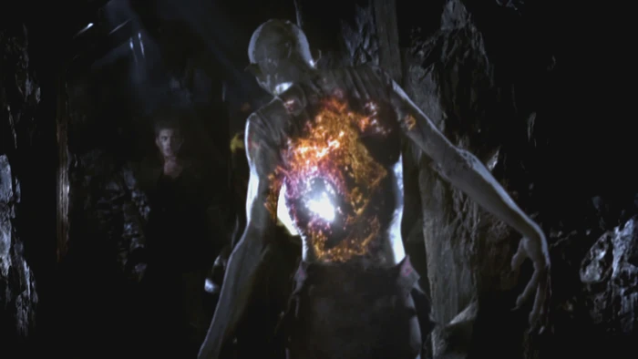
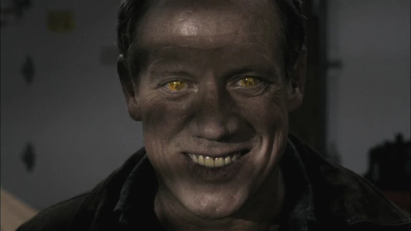
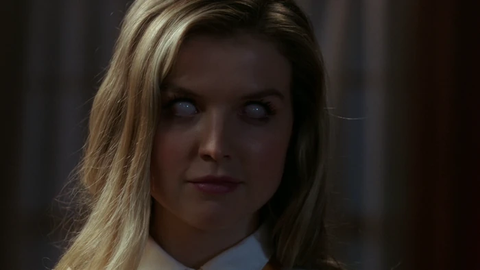
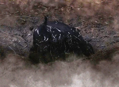
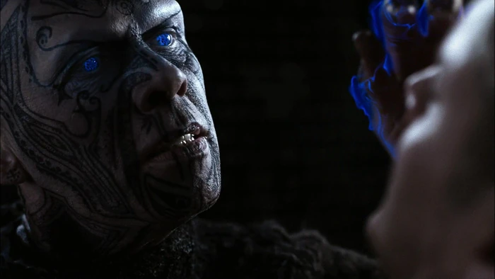
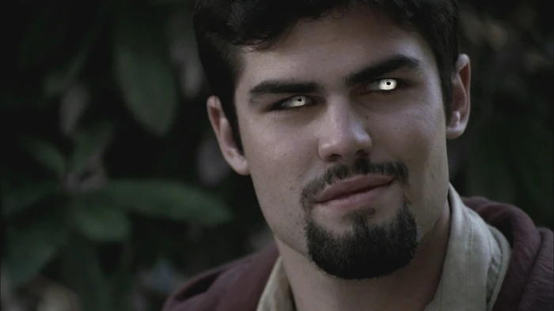

Criatura canibalWendigo
- Um dos primeiros monstros enfrentados pelos irmãos.
- Ataca em florestas e arrasta vítimas para cavernas.
- Representa o início da estrada sobrenatural da série.
Veja criaturas que marcaram os casos mais memoráveis de Supernatural. Cada card resume origem, ameaça e impacto na jornada dos Winchester.

Criatura canibal
Demônio de olhos amarelos
Demônio supremo
Predadores primordiais
Ilusionista sobrenatural
Metamorfo